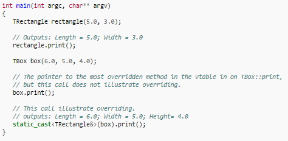

In C++, the name of the parent or base class is used followed by the scope resolution operator to override functions. For example, the following code presents two classes, the base class TRectangle, and the derived class TBox. TBox overrides the TRectangle class's print() method, so as also to print its height.
The method print() in class TBox, by invoking the parent version of method print(), is also able to output the private variables length and width of the base class. Otherwise, these variables are inaccessible to TBox. The following statements will instantiate objects of type TRectangle and TBox, and call their respective print() methods:
